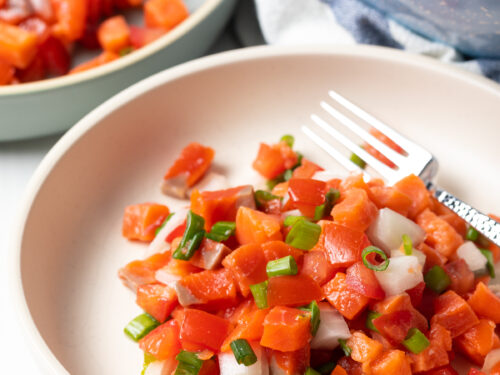

Lomi Salmon

Lomi Salmon is a traditional Hawaiian side dish consisting of salted salmon
and diced tomatoes, white onions, and green onions.
Ingredients
- Salted salmon
- Tomatoes
- Onion
- Green onion
Cooking Directions
- Dice the salted salmon, tomatoes, and onions into small eraser-size cubes. Put into a bowl.
- Thinly slice green onion and add to bowl.
- Gently mix ingredients together and you're done! Serve cold along with some meat and rice.
Return to homescreen